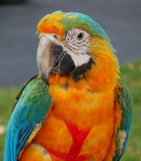
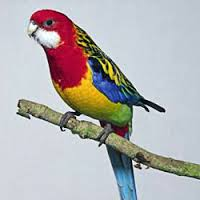

Főoldal
A papagájfélék (Psittacidae) a madarak osztályának papagájalakúak (Psittaciformes) rendjébe tartozó egyik család.
A család mérete nem minden rendszertani felfogás szerint azonos, egyesek alcsaládként ide sorolják a lórikat és a kakadukat is, mások ezeket külön családoknak tekintik. Ez utóbbi álláspont szerint 10 alcsalád, 83 nem és 366 faj tartozik a családba.
Nevezetesek intelligenciájukról: 2008-ban például egy tokiói arapapagáj tett szert hírnévre azzal, hogy fél perc alatt szétszed egy ördöglakatot;[1] beszédtevékenységük messze túlmutat a puszta ismétlésen: olykor összetett kérdések megválaszolására is képesek.[2] Díszállatként minden fajból szívesen tartják őket, kétségkívül az egyik legnépszerűbb és legismertebb madárcsalád a világon.
A papagáj elnevezés az arab babbagá szóból származik. Ennek eredete pedig egy afrikai nyelv, valószínűleg a Sierra Leonéban beszélt temne vagy timneh nyelv pampakaj szava, ami „fecsegőt” jelent, és az ott honos jákópapagájt jelöli.
Így kerülhetett az arab kereskedők közvetítésével a madárral együtt az elnevezés is Európa számos nyelvébe, így az olaszba (papagallo), görögbe (papagasz), németbe (Papagei), oroszba (попугай) és a magyarba is.
Valódi papagájformák(Psittacinae)
- Psittacus – 1 fajjal: Psittacus erithacus
- Poicephalus – 9 faj
- Cyclopsitta – 2 faj
- Psittaculirostris – 3 faj
- Cyanoliseus – 1 fajjal: Cyanoliseus patagonus
Valódi papagájformák(Psittacinae)kihalt fajai
- Mascarinus – 1 faj
- Lophopsittacus – 2 faj
- Necropsittacus – 1 faj